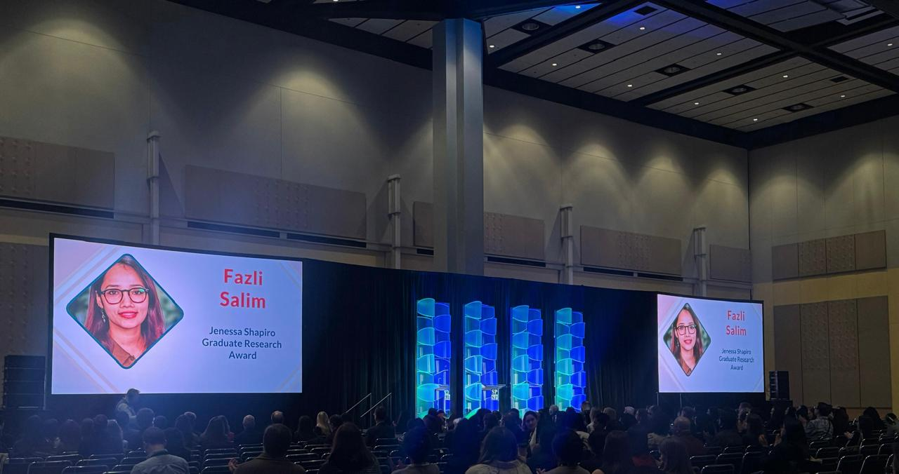

Doctoral Researcher · Boston College
Studying the psychology of how people become agents of systemic change — from climate action to democratic resilience.
How do individuals come to see themselves as integral to both personal and systemic solutions to environmental and social challenges?
→ 02Why do people fail to recognize systemic changes, and what shapes their sense of efficacy in collective action?
→ 03What psychological frameworks are necessary for societies to facilitate equal and sustainable futures?
→SPSP Award Ceremony · Chicago 2026

Jenessa Shapiro Graduate Research Award · SPSP Annual Convention
UNFCCC COP 30 · Belém, Brazil
COP30 is where global decisions meet human behavior. I'm excited to see my research come to life: how behavioral theories are tested against the realities of politics, economics, and culture in real time. I'm equally inspired by the chance to meet grassroots organizations from across the world who are developing community-centered solutions putting people at the heart of climate action, something that often gets ignored in international climate policies. For someone working at the intersection of behavior and environmental issues, it feels both deeply relevant and inspiring.
Boston College COP30 University Delegate →